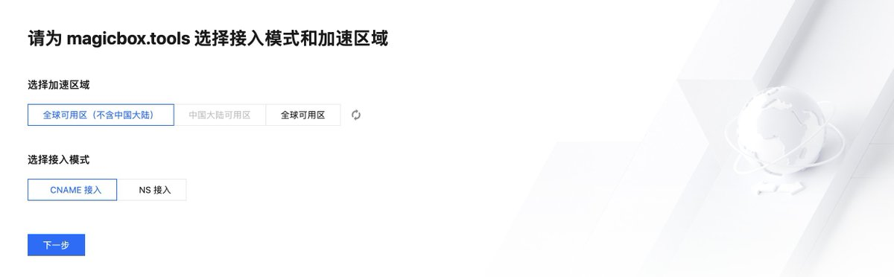
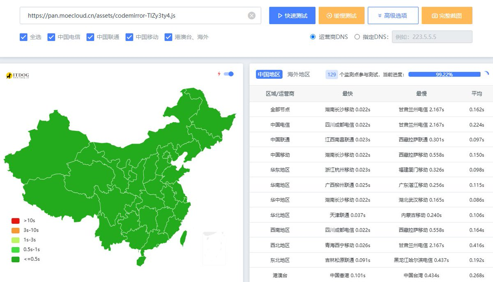

奶昔🥤
@realNyarime
@CitronaTeo 腾讯有三种选择：纯海外、纯国内、国内+海外
其中纯国内不给选，选图中第三个全球可用区域名有备案就会分配到国内的三网CDN。优选海外的腾讯AnyCast倒是可以比他分配的快点，但有部分地区访问境外IP会有阻断现象有国内的优选我还会挣扎一下，单线程500kb/s还支持websocket其实也够建站了


凍檸茶走冰走檸走茶走甜唔該
@CitronaTeo
@realNyarime 但是似乎可以不備案用優選IP？騰訊沒ban優選，似乎還比中國CDN快點